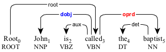
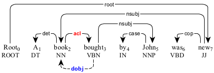

dobj : direct object
Primary
A direct object (dobj) is a nominal in the object position.

The direct object "a book" modifying the predicate "bought".
In a passive construction, the direct object comes before the predicate.

The direct object "a book" in the passive construction.
In a small clause, the direct object is followed by the object predicate (oprd).

The direct object "John" in the small clause "John the baptist".

The direct object "John" in the passive construction.
The direct object "John" in the passive construction.
Secondary
In a reduced passive construction, the direct object is represented by the secondary dependency.

The direct object "a book" in the reduced passive construction.
The direct object "a book" in the reduced passive construction.